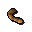

Worm

| Config name | worm |
| Item id | 943 |
| Value | 0 gp |
| Weight | 3g |
| Members | Yes |
| Tradeable | Yes |
| Stackable | No |
| Defined in | scripts/areas/area_gnome/configs/child.obj |
Worm
Ugh! It's wriggling!
Quests
Dragon Slayer Nature Spirit Fishing Contest The Grand Tree Shilo Village
Referenced in scripts
scripts/areas/area_edgeville/scripts/oracle.rs2scripts/areas/area_gnome/scripts/gnome_restaurant.rs2scripts/areas/area_gnome/scripts/gnomes.rs2scripts/areas/area_seers/scripts/mcgrubors_wood.rs2scripts/quests/quest_dragon/scripts/dragon_journal.rs2scripts/quests/quest_druidspirit/scripts/filliman.rs2scripts/quests/quest_fishingcompo/scripts/hemenster_fishing.rs2scripts/quests/quest_grandtree/scripts/foreman.rs2scripts/quests/quest_grandtree/scripts/glough.rs2scripts/quests/quest_zombiequeen/scripts/quest_zombiequeen.rs2scripts/skill_cooking/scripts/gnome_cooking/gnome_battas.rs2scripts/skill_cooking/scripts/gnome_cooking/gnome_bowls.rs2scripts/skill_cooking/scripts/gnome_cooking/gnome_cooking.rs2scripts/skill_cooking/scripts/gnome_cooking/gnome_crunchies.rs2